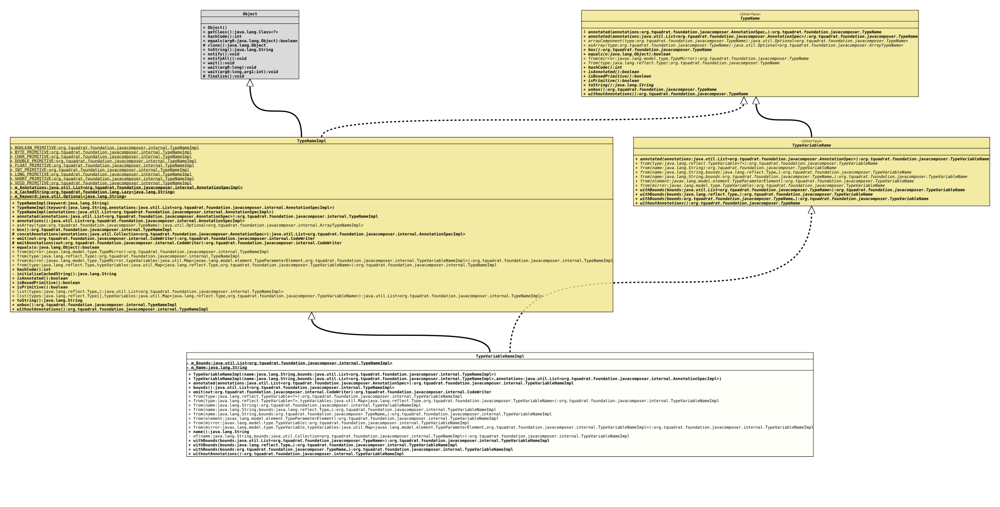

Class TypeVariableNameImpl
java.lang.Object
org.tquadrat.foundation.javacomposer.internal.TypeNameImpl
org.tquadrat.foundation.javacomposer.internal.TypeVariableNameImpl
- All Implemented Interfaces:
TypeName, TypeVariableName
@ClassVersion(sourceVersion="$Id: TypeVariableNameImpl.java 1151 2025-10-01 21:32:15Z tquadrat $")
@API(status=INTERNAL,
since="0.0.5")
public final class TypeVariableNameImpl
extends TypeNameImpl
implements TypeVariableName
The implementation of
TypeNameImpl
for type variable names.- Author:
- Square,Inc.
- Modified by:
- Thomas Thrien (thomas.thrien@tquadrat.org)
- Version:
- $Id: TypeVariableNameImpl.java 1151 2025-10-01 21:32:15Z tquadrat $
- Since:
- 0.0.5
- UML Diagram
-

UML Diagram for "org.tquadrat.foundation.javacomposer.internal.TypeVariableNameImpl"
{kind=link}
-
Field Summary
FieldsModifier and TypeFieldDescriptionprivate final List<TypeNameImpl> The bounds.private final StringThe name of this type variable.Fields inherited from class TypeNameImpl
BOOLEAN_PRIMITIVE, BYTE_PRIMITIVE, CHAR_PRIMITIVE, DOUBLE_PRIMITIVE, FLOAT_PRIMITIVE, INT_PRIMITIVE, LONG_PRIMITIVE, SHORT_PRIMITIVE, VOID_PRIMITIVE -
Constructor Summary
ConstructorsConstructorDescriptionTypeVariableNameImpl(String name, List<TypeNameImpl> bounds) Creates a newTypeVariableNameImplinstance.TypeVariableNameImpl(String name, List<TypeNameImpl> bounds, List<AnnotationSpecImpl> annotations) Creates a newTypeVariableNameImplinstance. -
Method Summary
Modifier and TypeMethodDescriptionfinal TypeVariableNameImplannotated(List<AnnotationSpec> annotations) Creates a new instance for an implementation ofTypeNameas a copy of this one, but with the given annotations added.final List<TypeNameImpl> bounds()Return the bounds for this type variable name.final CodeWriteremit(CodeWriter out) Emits this type name instance to the givenCodeWriter.static final TypeVariableNameImplfrom(TypeVariable<?> type) Returns type variable equivalent to the given type.static final TypeVariableNameImplfrom(TypeVariable<?> type, Map<Type, TypeVariableName> typeVariables) Returns type variable equivalent to the given type, after applying the given type variables .static final TypeVariableNameImplReturns a new type variable namednamewithout bounds.static final TypeVariableNameImplReturns a new type variable namednamewithbounds.static final TypeVariableNameImplReturns a new type variable namednamewithbounds.static final TypeVariableNameImplfrom(TypeParameterElement element) Returns a type variable name that is equivalent to the given element.static TypeVariableNameImplfrom(TypeVariable mirror) Returns a type variable name that is equivalent to the given mirror.static final TypeVariableNameImplfrom(TypeVariable mirror, Map<TypeParameterElement, TypeVariableNameImpl> typeVariables) Makes an instance ofTypeVariableNamefor the givenTypeMirror.final Stringname()Returns the name of this type variable.private static final TypeVariableNameImplof(String name, Collection<TypeNameImpl> bounds) Creates a new instance ofTypeVariableNamefrom the given name and the given bounds.final TypeVariableNameImplwithBounds(Type... bounds) Returns a newTypeVariableNameinstance as a copy of this one, with the given bounds added.final TypeVariableNameImplwithBounds(List<TypeName> bounds) Returns a new instance for an implementation ofTypeVariableNameas a copy of this one, but with the given bounds added.final TypeVariableNameImplwithBounds(TypeName... bounds) Returns a newTypeVariableNameinstance as a copy of this one, with the given bounds added.final TypeVariableNameImplCreates a new instance for an implementation ofTypeNameas a copy of this one, but without any annotations.Methods inherited from class TypeNameImpl
annotations, asArray, box, concatAnnotations, emitAnnotations, equals, from, from, from, from, hashCode, isAnnotated, isBoxedPrimitive, isPrimitive, list, list, toString, unboxMethods inherited from interface TypeName
annotated, box, equals, hashCode, isAnnotated, isBoxedPrimitive, isPrimitive, toString, unbox
-
Field Details
-
m_Bounds
The bounds. -
m_Name
-
-
Constructor Details
-
TypeVariableNameImpl
Creates a newTypeVariableNameImplinstance.- Parameters:
name- The name.bounds- The bounds.
-
TypeVariableNameImpl
public TypeVariableNameImpl(String name, List<TypeNameImpl> bounds, List<AnnotationSpecImpl> annotations) Creates a newTypeVariableNameImplinstance.- Parameters:
name- The name.bounds- The bounds.annotations- The annotations.
-
-
Method Details
-
annotated
Creates a new instance for an implementation ofTypeNameas a copy of this one, but with the given annotations added.- Specified by:
annotatedin interfaceTypeName- Specified by:
annotatedin interfaceTypeVariableName- Overrides:
annotatedin classTypeNameImpl- Parameters:
annotations- The annotations.- Returns:
- The new instance.
-
bounds
Return the bounds for this type variable name.- Returns:
- The bounds.
-
emit
Emits this type name instance to the givenCodeWriter.- Overrides:
emitin classTypeNameImpl- Parameters:
out- The code writer.- Returns:
- The code writer.
- Throws:
UncheckedIOException- Something went wrong when emitting to the output target.
-
from
@API(status=STABLE, since="0.2.0") public static final TypeVariableNameImpl from(TypeVariable<?> type) Returns type variable equivalent to the given type.- Parameters:
type- The type.- Returns:
- The type variable name.
-
from
@API(status=STABLE, since="0.2.0") public static final TypeVariableNameImpl from(TypeVariable<?> type, Map<Type, TypeVariableName> typeVariables) Returns type variable equivalent to the given type, after applying the given type variables .- Parameters:
type- The type.typeVariables- The type variables.- Returns:
- The type variable name.
-
from
-
from
-
from
-
from
@API(status=STABLE, since="0.2.0") public static final TypeVariableNameImpl from(TypeParameterElement element) Returns a type variable name that is equivalent to the given element.- Parameters:
element- The element.- Returns:
- The new type variable name.
-
from
Returns a type variable name that is equivalent to the given mirror.- Parameters:
mirror- The mirror.- Returns:
- The new type variable name.
-
from
@API(status=STABLE, since="0.2.0") public static final TypeVariableNameImpl from(TypeVariable mirror, Map<TypeParameterElement, TypeVariableNameImpl> typeVariables) Makes an instance ofTypeVariableNamefor the givenTypeMirror. This form is used internally to avoid infinite recursion in cases likeEnum<E extends Enum<E>>. When such a thing is encountered, aTypeVariableNamewithout bounds is made, and that is added to thetypeVariablesmap before looking up the bounds. Then if encountered again while constructing the bounds, thisTypeVariableNamecan be just returned from the map. And, the code that put the entry invariableswill make sure that the bounds are filled in before returning.- Parameters:
mirror- TheTypeMirror.typeVariables- The type variables.- Returns:
- The new type variable name.
-
name
-
of
Creates a new instance ofTypeVariableNamefrom the given name and the given bounds.- Parameters:
name- The name.bounds- The bounds.- Returns:
- The new instance.
-
withBounds
Returns a new instance for an implementation ofTypeVariableNameas a copy of this one, but with the given bounds added.- Specified by:
withBoundsin interfaceTypeVariableName- Parameters:
bounds- The additional bounds.- Returns:
- The new type variable name.
-
withBounds
Returns a newTypeVariableNameinstance as a copy of this one, with the given bounds added.- Specified by:
withBoundsin interfaceTypeVariableName- Parameters:
bounds- The additional bounds.- Returns:
- The new type variable name.
-
withBounds
Returns a newTypeVariableNameinstance as a copy of this one, with the given bounds added.- Specified by:
withBoundsin interfaceTypeVariableName- Parameters:
bounds- The additional bounds.- Returns:
- The new type variable name.
-
withoutAnnotations
Creates a new instance for an implementation ofTypeNameas a copy of this one, but without any annotations.- Specified by:
withoutAnnotationsin interfaceTypeName- Specified by:
withoutAnnotationsin interfaceTypeVariableName- Overrides:
withoutAnnotationsin classTypeNameImpl- Returns:
- The new instance.
-